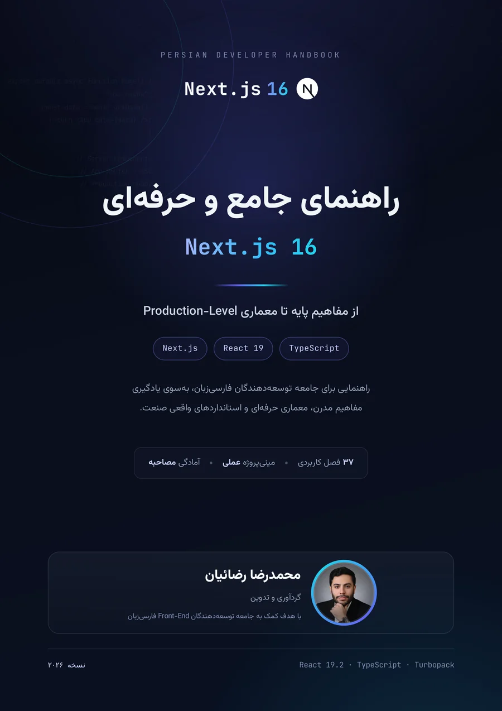

مدل ذهنی App Router
مرز سرور و کلاینت، Streaming و Hydration با تمرکز بر چرایی.
از App Router و Server Components تا معماری و استقرار
راهنمای فارسی و پروژهمحور Next.js 16؛ با تمرکز بر رندر سرور، Cache Components، Server Actions، امنیت، تست و Production.

بدانید داده کجا خوانده شود، چه چیزی کش شود و مرز Server و Client Component کجاست.
مرز سرور و کلاینت، Streaming و Hydration با تمرکز بر چرایی.
Cache Components، Turbopack، proxy.ts و React 19.2.
۲۱۶ پنجرهٔ کد، مینیبالگ و ۸ پروژهٔ کوچک.
feature-based، DAL، Route Handlers و Server Actions.
احراز هویت، امنیت، تست، Web Vitals و Self-Hosting.
ارتقا به ۱۶، خطاهای رایج، مصاحبه و واژهنامه.
App Router، Layout، RSC، Streaming، کشینگ، Server Actions و مینیبالگ.
API، Hydration، احراز هویت، امنیت، سئو، تست، استقرار و مهاجرت.
نکات طلایی، کارگاه ۸ مینیپروژه و اشتباهات رایج.
پرسشهای مصاحبه و واژهنامهٔ فارسی–انگلیسی.
مثالها نشان میدهند داده کجا خوانده شود، چه چیزی کش شود و مرز RSC و Client کجاست.
export default async function DashboardPage() { "use cache"; cacheTag("dashboard"); cacheLife("minutes"); const stats = await getDashboardStats(); return ( <Suspense fallback={<StatsSkeleton />}> <Stats data={stats} /> </Suspense> ); }
بدون دانلود، در مرورگر؛ با فهرست فصلها و لینک مستقیم به هر فصل.
۱۷۸ صفحه · ۳۷ فصلمطالعه آنلاینرنگی، قابل جستوجو، با فهرست داخلی.
۱۷۸ صفحه · A4دانلود PDFصفحههای کتاب، فصلبندیشده برای موبایل و کتابخوان.
۳۷ فصل · مناسب موبایلدانلود EPUBابزارهای ساخت نسخهها، داراییها و کنترل کیفیت در مخزن عمومی.
Python · CC BY-NC-SAمشاهده مخزنGit برای همکاری؛ JavaScript برای زبان؛ React برای رابط؛ Next.js برای Production.
Next.js · React · TypeScript · Front-End Architecture
توسعهدهنده و نویسندهٔ مجموعه راهنماهای فارسی؛ با تمرکز بر مدل ذهنی، شفافیت مرحلهبهمرحله و انتقال تجربهٔ مهندسی به زبان روشن.